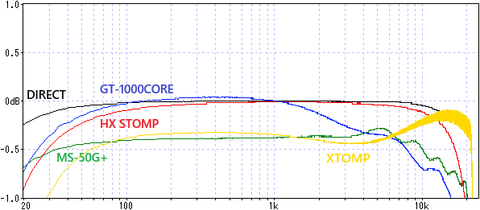

HOTONE XTOMP 修理・特性測定
2024年09月20日 カテゴリー：修理・改造・解析
エフェクト音が出ないジャンク状態のHOTONE XTOMPを手に入れたので、修理し特性を測定しました。
【修理】
フットスイッチが機能しておらず、基板同士を繋ぐケーブル（フレキシブル基板）の導通が一部ありませんでした。フレキシブル基板を発注することも考えましたが、コネクタの信頼性が疑わしかったので、ポリウレタン銅線（UEW）で直接接続しました。これでスイッチが機能しエフェクト音が出るようになって修理完了です。接続部分はマジックハンダ（ハックルー）で固めて動かないようにしておきました。
XTOMP自体は生産完了品ですが、PC用のソフトは公式サイトからダウンロードできます。Android用アプリは検索しても出てきませんでしたが、APKファイルからインストールすれば使うことができました（Android14）。
▽基板画像
＜主なIC等＞
TMS320C6720: DSP 200MHz
NANO120LD2BN:マイコン Arm Cortex-M0 42MHz
NT5SV8M16FS-6K: DRAM
W25Q64FV: フラッシュメモリ
TLC2262: オペアンプ
CS4272-CZZ: コーデック
CC2540: Bluetooth ワイヤレス・マイコン
TPS62162: 降圧スイッチングレギュレータ
HFD4/9: リレー
薄型の筐体で、内部はほとんど隙間がありません。スイッチはシーソー状の独特な構造です。リレーによりLチャンネルのみトゥルーバイパスが可能となっています。
TMS320C6720の最大動作周波数は200MHzで、MS-50G+で使われているTMS320C6745の半分以下です。XTOMPはエフェクトが一つなので、十分なスペックでしょう。
▽バイパス音
・周波数特性 ※±1dBに拡大（DIRECT：測定に使用しているオーディオインターフェースUR22Cの入出力を直結）

高音域側はカットされておらず、わずかに歪みが出ています。
・正弦波 約1kHz 330mVpp
歪率が高いように見えますが、0.04%程度なので問題ないでしょう。
＜実機比較＞
Green 9とTS9実機とを比較しました。TONEを変化させています。
HX Stompと同様、高音域が下がった特性になっています。TONEポットのカーブは概ね合っているようです。なぜか4kHzあたりが少し下がっています。
HOTONEでは「CDCM（Comprehensive Dynamic Circuit Modeling）」という、回路がダイナミックに変化した状態でモデリングを行っているそうです。静的な状態ではないので、周波数特性には現れない特別な処理となっている可能性があります。
Green 9の倍音です。偶数次倍音がそれなりに出ています。
Fender Twin Reverbのモデリング、Preampのみでの周波数特性です。
TREBLE、MIDDLE、BASSをうまく調整すると似た形になりました。
Twin Reverbのモデリングに設定されているスピーカーの周波数特性です。
XTOMPはマイクの種類や位置を変更できないので、あまり比較にならないかと思います。形が複雑になっていないため、他のデジタルエフェクターとは違う処理なのかもしれません。